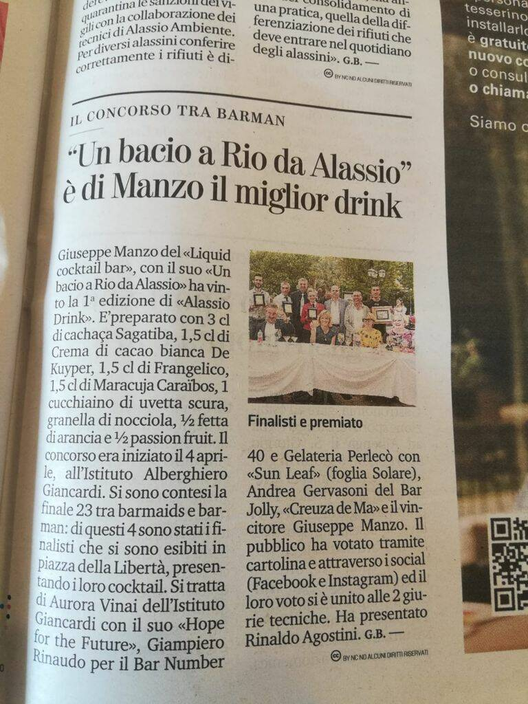
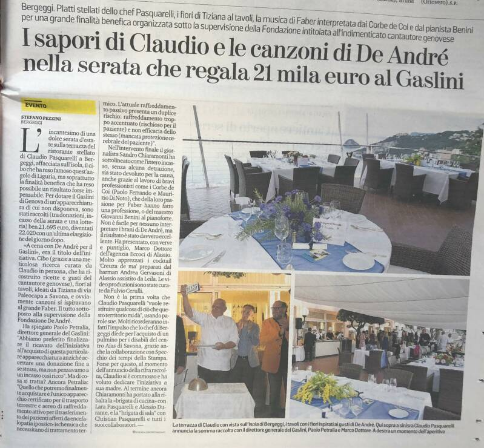
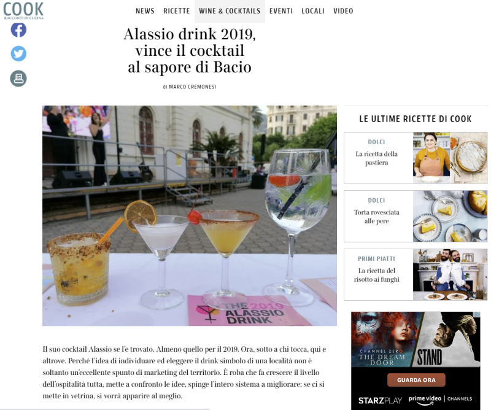
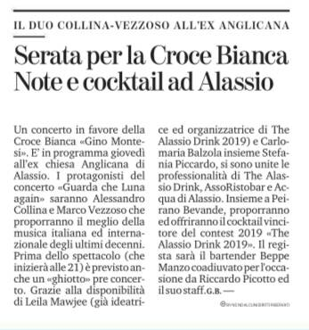
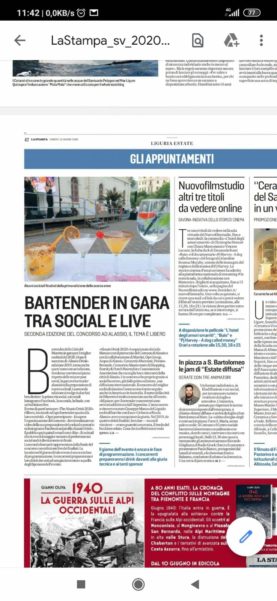
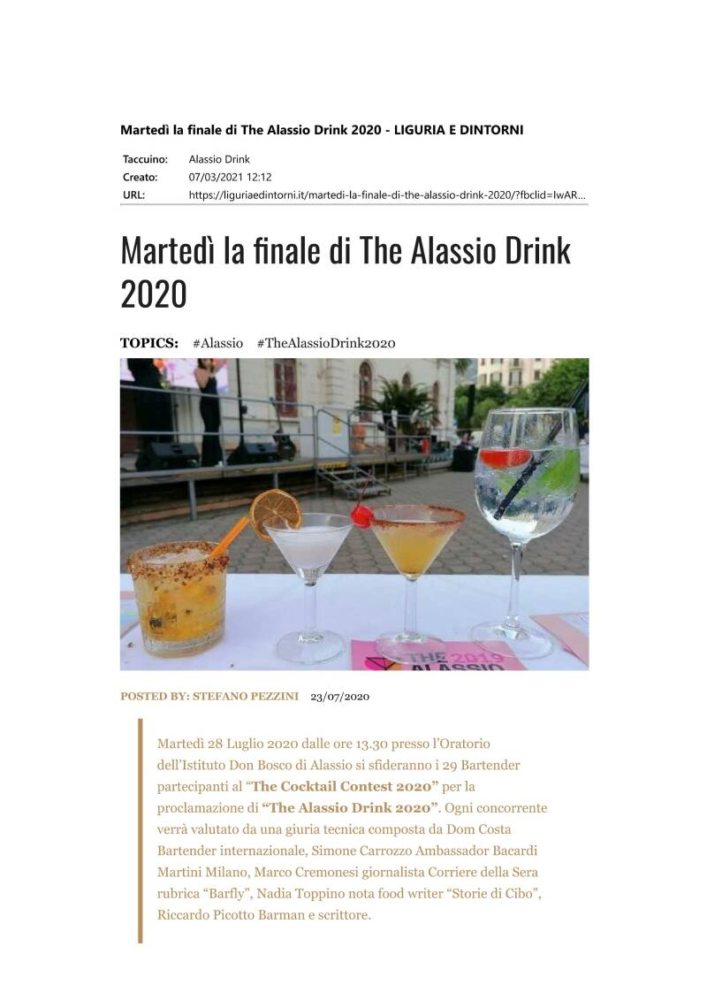
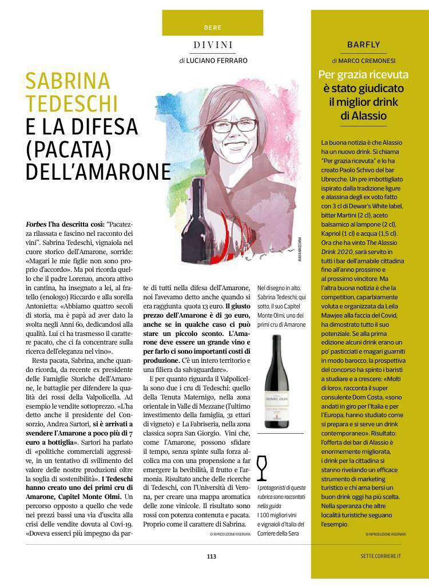
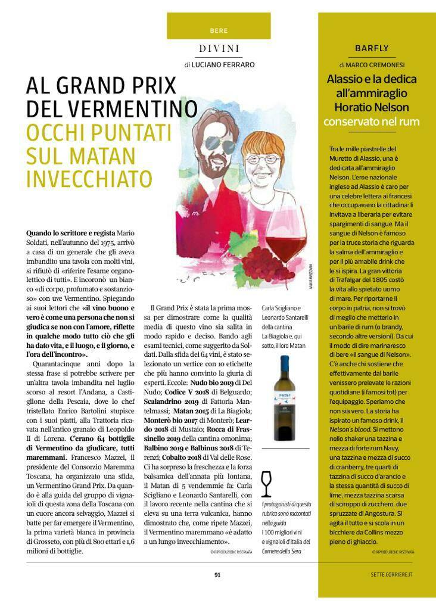
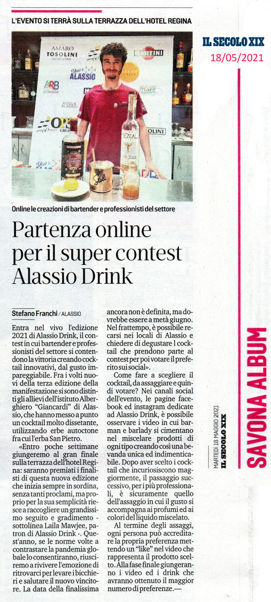
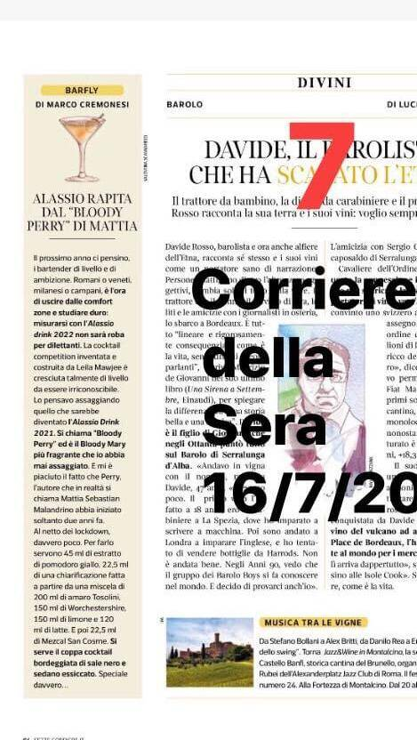

2019
«La notizia è che Alassio avrà il suo drink. Un cocktail tutto suo, scelto a furor di popolo da coloro che fino al 6 maggio assaggeranno quelli in gara nei bar della città del Muretto.» Dalla rassegna stampa 2019









2020





2021

